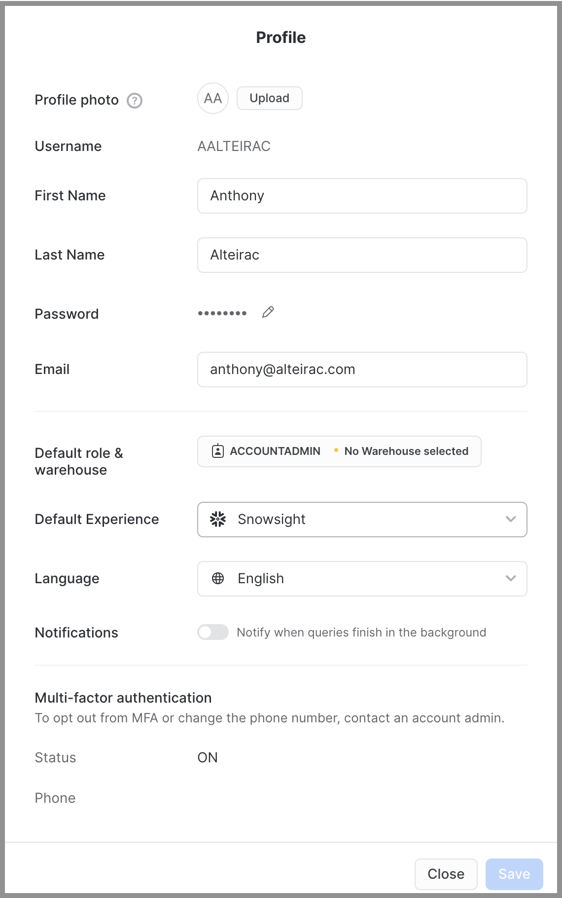
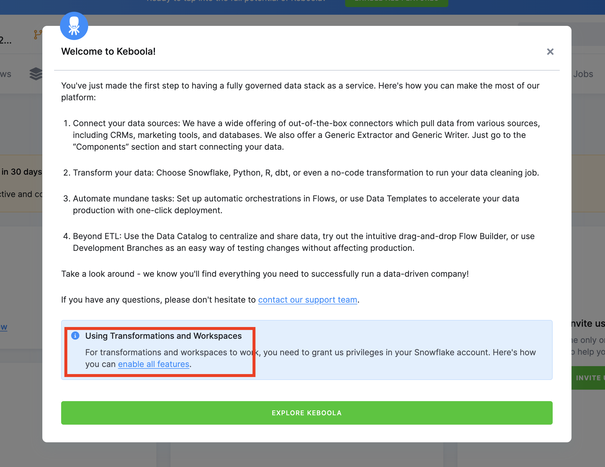
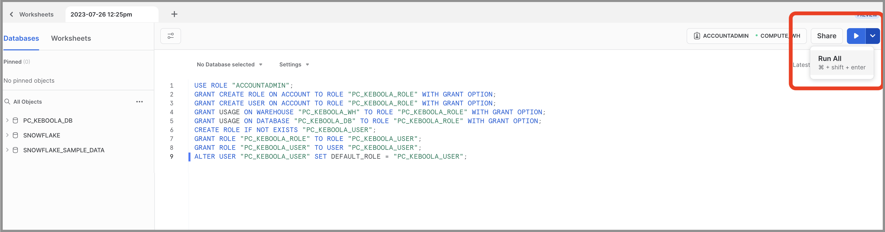
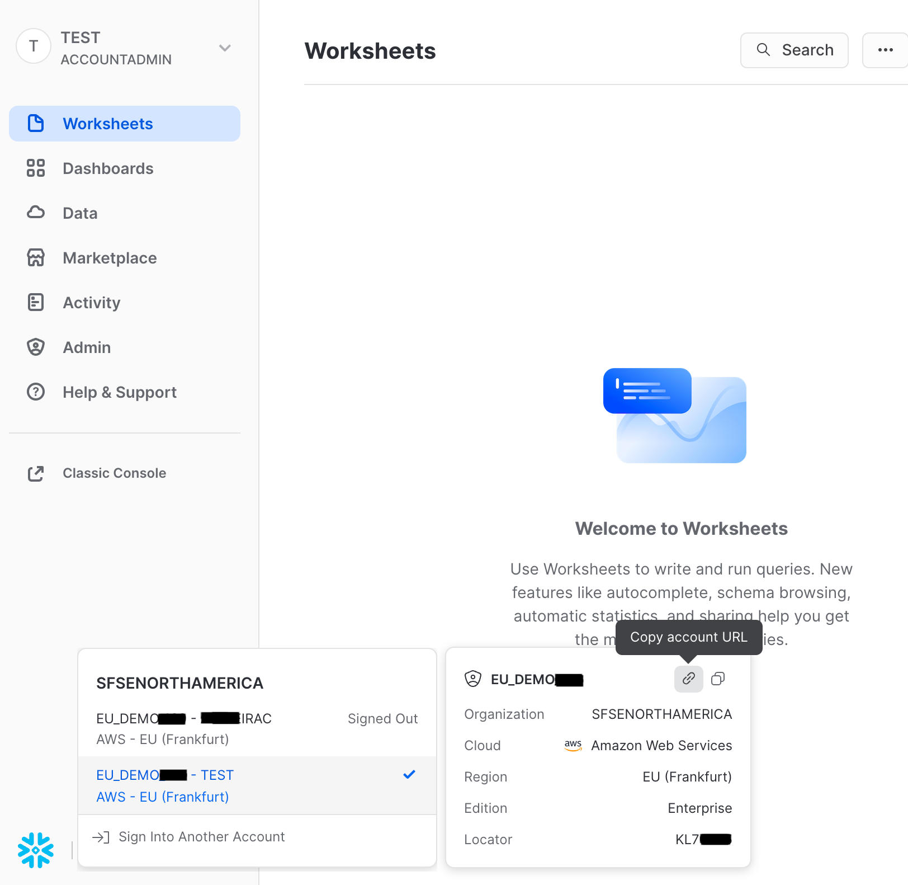
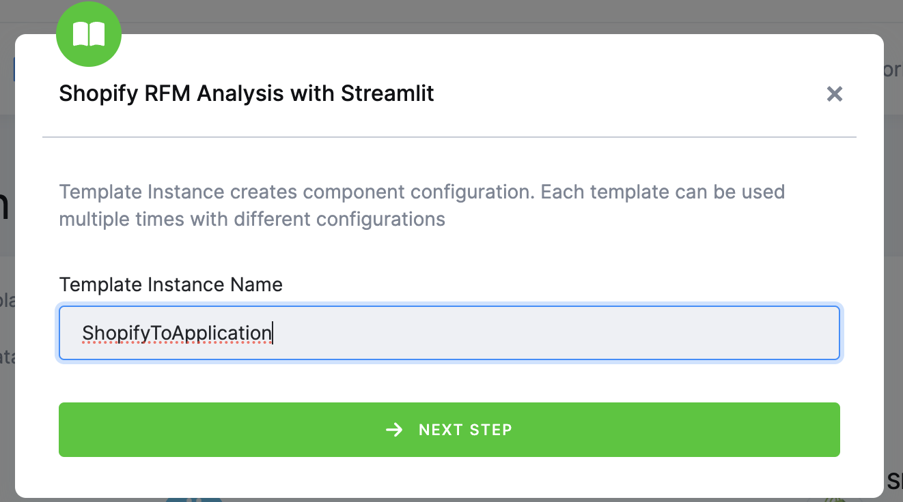
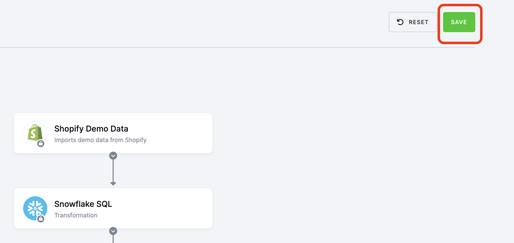
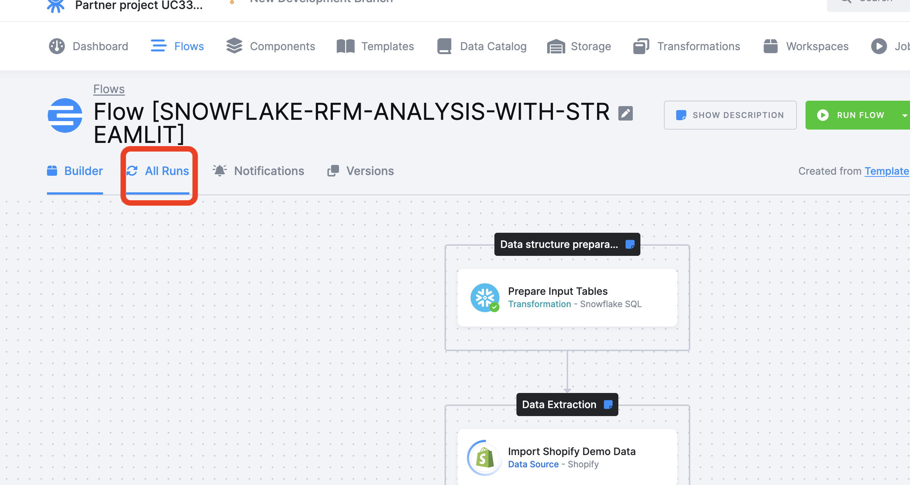
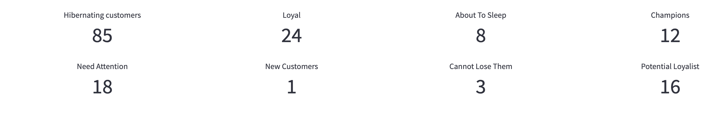
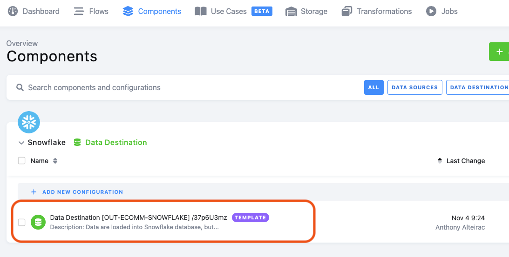
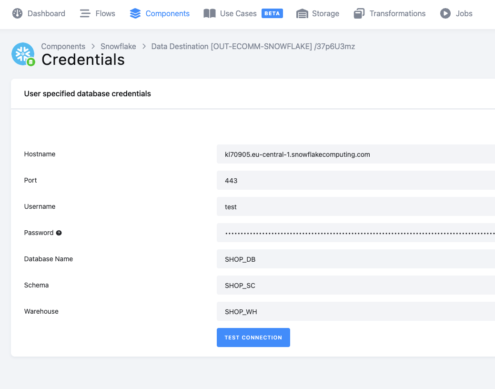

Modern Data Stack requires setup and maintenance and Snowflake goes a long way to lowering the bar.
Our Powered By Snowflake partner Keboola offers Data Platform as a Service, helping users further accelerate data projects by delivering a ready-to-use managed platform. It includes all the technologies a data team needs. Therefore enabling everyone to capitalize on Snowflake's capabilities and acting as an avenue to the incredible modern no-maintenance and no-code solution.
This Quickstart will guide you to build a complete data pipeline from ingestion, transformation, orchestration to presentation in a Streamlit application.
Prerequisites
- Familiarity with Snowflake
What You'll discover
- How to start working with Keboola
- How to create a flow based on Keboola template
- How to configure Keboola template
- How to work with SQL transformation in Snowflake
- Introduction to Snowpark Python UDF
- How to run Keboola flow
- How to visualize data with Streamlit
 What You'll Need
What You'll Need
- A Snowflake account or free trial with an ACCOUNTADMIN user.
What You'll Build
- A complete data pipeline from Shopify. The Keboola template will automatically join, clean and transform data into Snowflake. Within few clicks, Keboola will generate all necessary steps plus a Streamlit Application to interact with data. The template will also generate a Snowpark UDF to create RFM segmentation. This will help you to optimize the monetization of your online traffic.

Step 1
- Login to Snowflake Snowsight.
- Switch role to ACCOUNTADMIN.
- Click Admin > Partner Connect.
- Search for Keboola.

- Click Keboola tile.
Step 2
- See objects that will be created in Snowflake.
- Click Connect.

Step 3
- Click Activate.

Troubleshooting
You must have a verified email in your profile. Otherwise you'll get the following message:

You also MUST have a first name and last name in your profile:
Open your profile:

Add email, first and last name:

Define your Keboola password
After you have clicked "Activate" from the previous section, you'll land on Keboola's Welcome page to define your password:

Enable full features
Congratulation, you have now a Keboola account!
We need to enable all features for this lab. It's a simple process.
Click on "Enable All Features" link:

Copy the SQL code from the Keboola UI:

In Snowflake Snowsight, open a new worksheet, paste the code and select "Run All", be sure all rows are executed!

Go back to Keboola, you should see the following:

Here we'll prepare everything for Keboola to write into Snowflake account, remember Partner Connect flow already created a DB (PC_KEBOOLA_DB) and a warehouse (PC_KEBOOLA_WH):
- Get hostname information, note for later usage
Login to Snowflake trial account
- Get host name:

At the left bottom of the screen, hover the account and click on "Copy account URL".
Paste the content in safe place to reuse later.
We need first to activate the Data Apps feature in Keboola:
In the top right corner, select your user and navigate to "Settings"

Activate the Data Apps Feature:

Let's move to Keboola platform, after you have created your Keboola trial account, login to the platform and navigate to the "Templates" tabs.
In the searchbar, type "RFM"
Be sure you select the correct template "Shopify RFM Analysis with Streamlit".

Click the green button "+ USE TEMPLATE"

You'll see more details on the template, click the top right green button "+ USE TEMPLATE"

Enter a name and click " -> NEXT STEP"
For this lab, we'll use dummy Shopify data so we don't need to configure the Shopify Component.
The template configuration constists in setting-up connection information to each component needed to run the flow.
For our lab, we'll need to setup only Snowflake.

We need to enter Snowflake information in the "Snowflake Destination" step of the flow:
Click on "Edit Configuration"

Add the information we created during step 4 (Get Snowflake Account URL)

Hostname is the URL you copied in Snowflake WITHOUT "https://"
Port is "443"
Username is your Snowflake user name
Password is your Snowflake password
Database Name is "PC_KEBOOLA_DB"
Schema Name is "PUBLIC"
Warehouse is "PC_KEBOOLA_WH"
Save the template:

Get Keboola token:
From the Streamlit application, we can write back data thanks to Keboola API.
We need first to get an API token. Follow the steps to generate this token.
Navigate to token page in Keboola:

Generate the token, do not forget to set "Full Access" and to copy the value, paste into a text file!

Get Snowflake account name:
At the left bottom of the screen, hover the account and click on "Copy account URL" paste into a text file!
Navigate to the Flow page: 
Select the Flow: 
Scroll down in the Flow and select the "RFM Analysis Data App", click on "Edit Configuration":

Change the values according to your Snowflake account and Keboola API token:
user and password are your SNOWFLAKE user and password
account is the snowflake URL you have pasted in your text file
keboola_key is the keboola API token you have pasted in your text file

The template generated a Keboola Flow. A flow is a sequence of actions.
Navigate to the Flow page:
Select the Flow:
Run the Flow:

Monitor the run:

The inital run can take about 10mn, subsequent will take only few mn.
Success!

Open your Snowflake web tab and check the PC_KEBOOLA_DB content.
You should see the tables created:

We have seen Keboola Shopify template in action. We have now a complete set of tables in Snowflake with Shopify sales data including an RFM segmentation, ready to use!
RFM stands for Recency, Frequency, and Monetary value, each corresponding to some key customer charasteritics. These RFM metrics are important indicators of a customer's behavior because frequency and monetary value affects a customer's lifetime value, and recency affects retention, a measure of engagement
In this section, we'll leverage this segmentation in the Streamlit application, automatically created from the template.
This application will :
- Connect to your Snowflake account
- Connect to your Keboola project
- Give you an overview of the generated RFM Segmentation
- Simulate Revenue impact of discount on targeted segment(s)
- Get targeted customer list and expected discount to trigger a marketing campaign
- Write back this information in Keboola for a next flow to create the campaign
Navigate to the Data Apps section

Open the Data App

If your Snowflake information are correct, after clicking "Connect" you should see:

RFM Segmentation Overview
You see here the generated segmentation and the number of customers assigned to.

Simulate discount
You can select the segment(s) you want to assign discount:

You can then adjust discount level and expected revenue increase.

This will calculate the impact on the total revenue

Generated list of targeted customers
Scrolling down the page, you'll find an always adjusted list of customers (based on selected segments) and the level of discount.
This list can be used to trigger a marketing campaign:

Write the table back into Keboola
Finally press the "UPLOAD" button:

Wait until the upload is finished:

Check the table in Keboola:

YOU'RE DONE WITH THE LAB !! 🍾
You choose the wrong template
Delete the associated Flow

Delete the Components

Delete the Storage

Same player, start again :-)
Your Snowflake credentials are wrong
Navigate to the Components tab, click on the Snowflake Data Destination:

Select "Database Credentials" on the right:

Udpate and test your credentials:

Your DB name, schema, warehouse name are wrong
Navigate to the Components tab, click on the Snowflake Data Destination:
Select "Database Credentials" on the right:
Check the DB, Schema, Warehouse:
Your Data Application secrets are wrong
Navigate to the Data Apps section:
Open the configuration:

Correct the secrets:
Congratulations! You've successfully built a complete data pipeline from ingestion, transformation, orchestration, to presentation in a Streamlit application!
What You Learned
- Connect to your Snowflake account to Keboola project
- Instanciate Keboola template
- Automatically generate RFM segmentation
- Connect Snowflake and Keboola to Streamlit application
- Write back data from Streamlit to Keboola